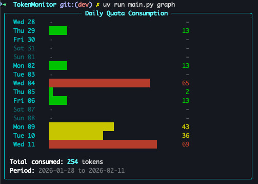

Story · AI tooling
Metering the AI coding tools
AI coding assistants are the new power tools — and worth using deliberately. So when GitHub Copilot would not tell me how much quota I had left, I went and asked its API directly.
I work with AI coding tools daily — OpenCode, Codex, Claude — and like any tool with a bill attached, they reward being used deliberately. Copilot has a usage quota, but no useful way to watch it. You find out you are running low the way you find out a pipeline broke at hour twenty: too late.
So I put a proxy between the client and GitHub, watched the traffic, and found the undocumented API that reports quota state. On top of it I built a live-updating quota meter — a small always-visible gauge of how much Copilot I have left, which turned pacing my usage from guesswork into a glance.

It is the same move as the pipeline monitoring wall and the mainframe map: when a system will not tell you what is going on, instrument it until it does. AI tools are not exempt.

Current experiment in the same spirit: using a small local LLM as a front-line worker that rightsizes requests — so the big, expensive models only get the work that actually needs them.
Have a system that needs this kind of attention?
Tell us where your current testing approach breaks down. We will help you define a practical path forward.
Talk to WhileOne